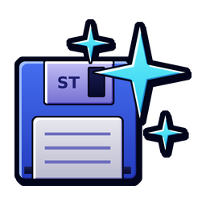
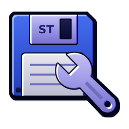
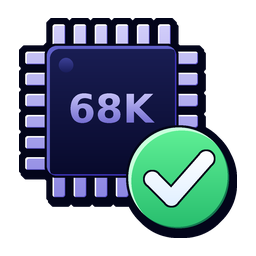

ATARI ST GAMING / WINDOWS + LINUX 1.1.576 · SMOOTH MOTION + UPDATES
Atari ST. A whole new view.
The games you remember. More screen. Smoother action.
Play your Atari ST favourites on Windows or Linux. Open up supported games with widescreen views, sharpen the feel with smooth motion and run-ahead, and bring back the glow with CRT bezels and Auto HDR.
Your original game disks. Enhancements you choose. No Atari TOS ROM required.
Vroom running in SemaTor 1.1.564. Wider gameplay, with the original dashboard kept in view. Games are not included.
WIDESCREEN+SMOOTH MOTION+CRT & HDR+RUN-AHEAD
01 / GIVE YOUR FAVOURITES MORE
Same classics. New possibilities.
Race beyond the old screen edges. Follow sharper, smoother scrolling. Choose the warmth of a CRT or a clean pixel picture. Set up each game the way you want to play it.
SEE MORE
Widescreen. Ultrawide, too.
Game-specific enhancements open up supported playfields instead of stretching the picture. Use 16:9, 21:9 or up to 32:9 where the game allows it; FIT adapts to the available space within each profile’s limits.
Dedicated smooth-motion enhancements add intermediate movement in supported games, including scrolling backgrounds in Xenon and Xenon 2. Frame generation offers another motion option; results depend on the game and settings.
Wrap the game in a CRT bezel. Tune scanlines, phosphor, glow and curvature, or choose a clean picture. Super ST colour adds smoother shading while keeping outlines sharp.
LIGHT IT UP
Auto HDR.
Give bright highlights more room to shine on a compatible HDR display. Adjust the picture to your screen with the Vulkan renderer’s HDR controls.
STAY RESPONSIVE
Run-ahead.
Predict the next game picture early to reduce the delay introduced by frame generation. SemaTor measures the cost and uses run-ahead when it fits the frame budget.
KEEP PLAYING
Save. Rewind. Try again.
Save states with previews, rewind and per-game settings make it easier to pick up where you left off. F11 brings up your session; F12 puts the setup at your fingertips.
Enhancements are optional. Widescreen and dedicated smooth motion depend on the game and disk edition; HDR and some frame-generation options also depend on your renderer, GPU and display.
XENON 2 / ACTUAL GAMEPLAY
One more credit.
The ship, the scenery, the soundtrack. Rediscover your collection with game-specific enhancements and a picture you can make your own.
This capture shows the CRT presentation. Try smooth motion in-game to see the scrolling in action.
Smooth Motion at any refresh rate, vertical modes for Xenon and Xenon 2, FidelityFX frame generation, sturdier sound and a new Linux ARM64 build. See what’s new →
Download, add your game disks and play. Choose enhancements per game, and keep your saves and settings between sessions.
Windows x64
Extract into a writable folder. Launch SemaTor.exe, with SDL3.dll beside it.
Use the signed in-app updater. If the older Windows interface is unreadable, extract the new ZIP over your installation, preserving Games, Media, User and Add-ons. Older updater helpers may require a full ZIP update.
What’s included—and what isn’t?
The desktop app, SemaOS and its tools are included. Supply your own game disks. No commercial games or Atari TOS ROMs are bundled. Android and handheld interfaces remain separate development work, not downloads offered here.
Browse cover art, search your collection and keep different disk editions together under one game. SemaOS is the built-in interface inside SemaTor, a Windows and Linux app. Choose its retro desktop or the classic library in Settings.
RETRO DESKTOP · VIOLET ACCENT
Original, your way.
Violet, teal, amber or crimson accents. A gradient, the retro scene or your own wallpaper. Choose icon and label styles and tune the size of your desktop.
A familiar kind of GEM.
Green desktop. Light windows. Matching icons and a monospace system font. Pick a fine pattern or a plain green background.
Mouse. Keyboard. Gamepad.
Move between windows, search with Find and use gamepad focus to reach the controls. Prefer the classic library? Choose it in Settings.
Beyond the games: explore the SemaOS creative tools
EXTRAS / WHEN YOU FEEL LIKE CREATING
From “one more game” to “I made this.”
These are working apps inside SemaOS. Every screenshot below comes from the running interface, with demo content identified beneath it.
Create / SemaSynth
Three voices. A whole studio.
Compose with patterns, a song arrangement and editable instruments. Work with the ST sound chip, use a MIDI keyboard on Linux, and export your music.
Built-in Studio demo song.
Pattern & song editors
WAV, YM and SNDH export
MP3 export with a supported encoder
Create / SemaPaint
Think in sixteen colours.
Draw on a 320 × 200 ST canvas with ST or STE palettes. Use a subtle tile grid and snap, selections, transforms and undo. Open supported artwork from a game disk and save the edited picture into a separate disk copy.
Demo artwork opened from a real test disk; Save disk copy keeps the original intact.
16-colour pixel artwork
Supported disk-art import and copy export
Save PI1, NEO and PNG

Create / Maker
Give your picture a life of its own.
Combine a SemaPaint picture, a SemaSynth tune and scrolling text in an ST intro. Save a named project with its picture and music, inspect complete generated assembly, and build a separate floppy image.
An editable intro project using demo artwork.
Picture + music + text
Generated 68000 source
A real ST program on disk
Create / Program Lab
Write for the 68000.
Edit assembly, assemble a program and run it from a disk. Syntax colours, search, undo and saved source files make the desktop a place to build things.
Built-in example program.
Assembly editor
Built-in assembler
Build and run from disk

Explore / Disk Workshop
Get inside the disk.
Browse a disk image, open its files, work with folders and prepare a new ST disk. Move between the workshop and the apps that understand each file.
A demo disk with editable artwork and a README.
Browse and manage files
Undo edits and save a disk copy
Open files in SemaOS apps

Explore / Hardware Check
Ask more of your program.
Run a disk against the available machine configurations and inspect the results. A live test helps you see the program as it runs.
Hardware Check before running a test.
Machine presets
Timed test runs
Live test view
And the things that make a desktop useful.
Jukebox
Play supported music from inserted ST disks, SNDH tunes and your verified Turrican II Amiga disk. Keep cached favourites; trim compatible recordings or send compatible tunes into SemaSynth.
Code Reader
Read a program as 68000 assembly. Follow branches and calls, search addresses and save a listing.
Explorer & Documents
Browse your files and open pictures, music, source and disk images in the app that understands them.
Pictures & Notes
Revisit screenshots, take an image into SemaPaint and keep notes alongside your games.
Details & Statistics
Bring a game’s notes, music and saves together, and keep track of your collection and play time.
Machine & Video
Check the system and display controls available on your platform, including Linux sound and network information.
ABOUT THESE IMAGES
Vroom (1.1.564) and Xenon 2 (1.1.563) are actual gameplay captures with CRT enabled. Still images show presentation, not motion or HDR output. Desktop and creative-app captures come from the running Linux interface; their versions and demo content are recorded in the manifest. Game artwork belongs to its respective owners.